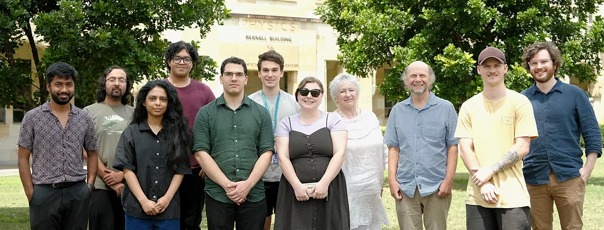

We are always interested in hearing from potential collaborators. If you are interested in working with one of our members in a
particular field or on a specific topic, please feel free to contact them directly via their preferred links on the
Publications page.
If you are interested in joining QuOTh-QI, whether in a postdoctoral or postgraduate position, you can visit the University
of Queensland's School of Mathematics and Physics webpage (https://smp.uq.edu.au/) for
more information on how to apply. Prospective postdoctoral members are invited to contact us directly to express interest.
For all other inquiries, or to provide feedback on this website, please contact Nick Zaunders at n.zaunders@uq.edu.au.